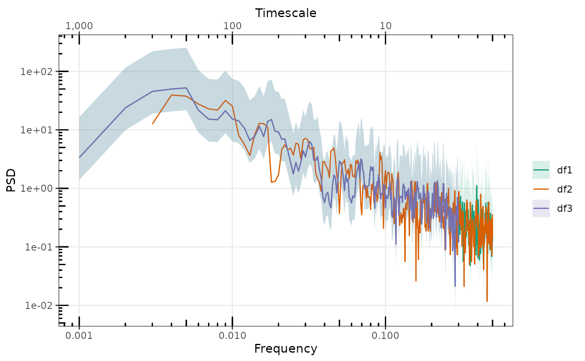
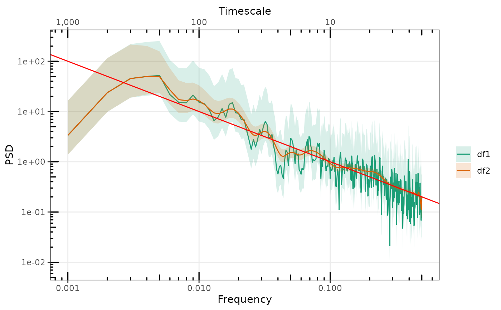
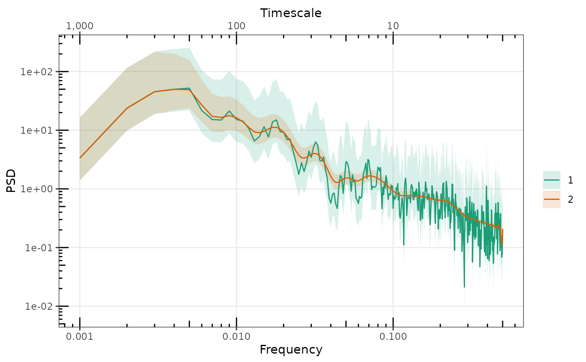
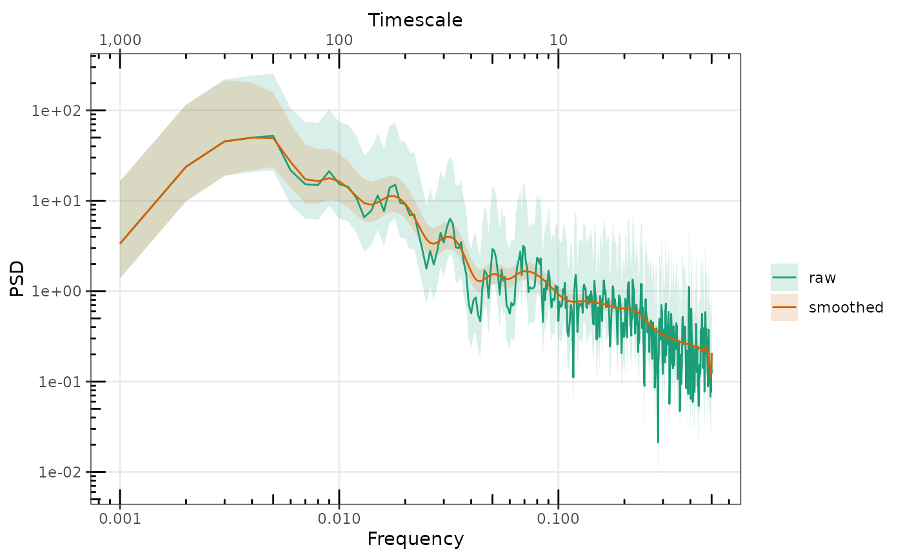

Plot One or More Spectra with ggplot2
gg_spec.RdPlot One or More Spectra with ggplot2
Usage
gg_spec(
x,
gg = NULL,
conf = TRUE,
spec_id = NULL,
colour = spec_id,
alpha.line = 1,
alpha.ribbon = 0.3,
removeFirst = 0,
removeLast = 0,
force.CI = FALSE,
min.colours = 2
)Arguments
- x
An object of class "spec" or "spec_df"
- gg
An existing ggplot object on which to add a new spec layer
- conf
Plot shaded confidence interval if it exists in the spec object
- spec_id
Name for this plot layer
- colour
Colour or name of variable to which to map to colour
- alpha.line
Alpha level for the spectra line(s)
- alpha.ribbon
Alpha level for the confidence region(s)
- removeFirst, removeLast
remove first or last "n" values on the low or high frequency side respectively. Will be unpredictable when used with a list of spectra, or spec_df object with multiple spectra with different frequency axes.
- force.CI
Force the plotting of confidence regions when the total number of frequencies exceeds 10000. Defaults to FALSE
- min.colours
minimum number of spectra before starting to colour them separately
Examples
library(PaleoSpec)
N <- 1e03
beta <- 1
alpha = 0.1
ts1 <- SimPLS(N = N, b = beta, a = alpha)
ts2 <- SimPLS(N = N, b = beta, a = alpha)
sp1 <- SpecMTM(ts1)
#> Warning: Time series is not a ts object and deltat is not set. Frequency array and axes may be incorrect.
sp1 <- AddConfInterval(sp1)
sp2 <- SpecMTM(ts2)
#> Warning: Time series is not a ts object and deltat is not set. Frequency array and axes may be incorrect.
# plot single spectrum
p <- gg_spec(sp1, spec_id = "df1")
#> Scale for colour is already present.
#> Adding another scale for colour, which will replace the existing scale.
p
# Add additional second spectra
p <- gg_spec(sp2, p, spec_id = "df2", removeFirst = 2)
#> Scale for x is already present.
#> Adding another scale for x, which will replace the existing scale.
#> Scale for y is already present.
#> Adding another scale for y, which will replace the existing scale.
#> Scale for colour is already present.
#> Adding another scale for colour, which will replace the existing scale.
#> Scale for alpha is already present.
#> Adding another scale for alpha, which will replace the existing scale.
p
p <- gg_spec(sp1, p, spec_id = "df3", removeLast = 200)
#> Scale for x is already present.
#> Adding another scale for x, which will replace the existing scale.
#> Scale for y is already present.
#> Adding another scale for y, which will replace the existing scale.
#> Scale for colour is already present.
#> Adding another scale for colour, which will replace the existing scale.
#> Scale for alpha is already present.
#> Adding another scale for alpha, which will replace the existing scale.
p

sp2 <- LogSmooth(sp1)
p <- gg_spec(sp1, spec_id = "df1")
#> Scale for colour is already present.
#> Adding another scale for colour, which will replace the existing scale.
p <- gg_spec(sp2, p, spec_id = "df2")
#> Scale for x is already present.
#> Adding another scale for x, which will replace the existing scale.
#> Scale for y is already present.
#> Adding another scale for y, which will replace the existing scale.
#> Scale for colour is already present.
#> Adding another scale for colour, which will replace the existing scale.
#> Scale for alpha is already present.
#> Adding another scale for alpha, which will replace the existing scale.
p <- p + ggplot2::geom_abline(intercept = log10(alpha), slope = -beta, colour = "red")
p

# Or directly plot named or unnamed list
gg_spec(list(sp1, sp2))

gg_spec(list(raw = sp1, smoothed = sp2))

# without setting any names all spectra will be black
p <- gg_spec(sp1)
#> Scale for colour is already present.
#> Adding another scale for colour, which will replace the existing scale.
sp2 <- LogSmooth(sp1)
p <- gg_spec(sp2, p)
#> Scale for x is already present.
#> Adding another scale for x, which will replace the existing scale.
#> Scale for y is already present.
#> Adding another scale for y, which will replace the existing scale.
#> Scale for colour is already present.
#> Adding another scale for colour, which will replace the existing scale.
#> Scale for alpha is already present.
#> Adding another scale for alpha, which will replace the existing scale.
#> Scale for colour is already present.
#> Adding another scale for colour, which will replace the existing scale.
p